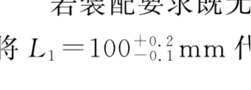
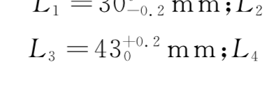
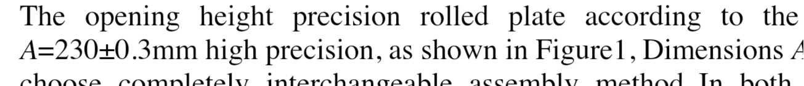

{"pendingChecked":19,"wrongPending":0,"wrongRate":0}



| 文档/页 | 原文 | 改前 nominal | 改后 nominal | 状态 |
|---|---|---|---|---|
| r2 p2 | L₀ = 0⁰₀ mm | 00 | 0 | pending |
| r2 p2 | L₁ = 100⁺⁰·²₋₀.₁ mm | 1001 | 100 | pending |
| r2 p3 | L′_b = 5.2⁺⁰·¹₀ mm | 5.20 | 5.2 | pending |
| r2 p3 | Zₘₐₓ = 5.2 + 0.1 − 4.9 = 0.4 (mm) | 0.4 | 0.4 | pending |
| r2 p3 | δ_{L_b} = 0.10 mm | 0.10 | 0.10 | pending |
| r2 p3 | L₃ = 43⁺⁰·²₀ mm | 430 | 43 | pending |
| r2 p4 | δ_{L_z} = δ_{L_0} − δ_{L_b} = 0.25 − 0.10 = 0.15 (mm) | 0.15 | 0.15 | pending |
| r5 p2 | L₁ = 50 mm | 50 | 50 | pending |
| r5 p2 | L₂ = 27 mm | 27 | 27 | pending |
| r6 p1 | A = 230 ± 0.3 mm | 230 | 230 | pending |
| r6 p1 | A₂ = 765.41 mm | 765.41 | 765.41 | pending |
| r6 p1 | A₁ = 759.48 mm | 759.48 | 759.48 | pending |
| r6 p1 | A₃ = 1753 mm | 1753 | 1753 | pending |
| r6 p2 | T_{avA} = T₀/m(m−Ring Qty.) = 0.6/3 = 0.2 mm | 0.2 | 0.2 | pending |
| r6 p2 | T₂ = 0.2 mm | 0.2 | 0.2 | pending |
| r6 p2 | T₁ = T₂ = 0.2 mm | 0.2 | 0.2 | pending |
| r6 p2 | T₃ = T₀ − T₁ − T₂ = 0.6 − 0.2 − 0.2 = 0.2 mm | 0.2 | 0.2 | pending |
| r6 p2 | A₀ₘₐₓ = 1753.1 − 759.38 − 765.31 = 228.41 mm | 228.41 | 228.41 | pending |
| r6 p2 | A₀ₘᵢₙ = 1752.9 − 759.58 − 765.51 = 227.81 mm | 227.81 | 227.81 | pending |